Holistic
The whole is greater than the sum of its parts.
1. How many solutions to this level are there?
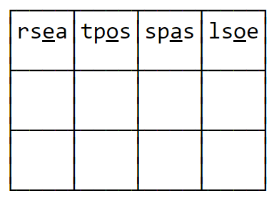
) 1
) 2
) 3
) 4
2. Which of these animals cannot be placed on the grid?
) 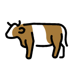
) 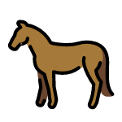
) 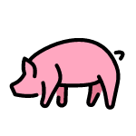
) 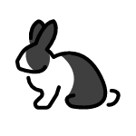
3. Which of these people does not appear in the city?
) 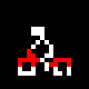
 ) 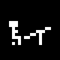
) 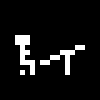) 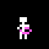
)
4. You can add walls at exactly two of the labeled spaces to form a solvable level. Which two spaces?
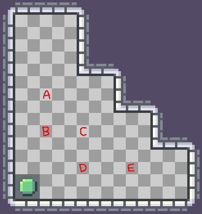
) A and E
) B and E
) B and D
) C and E5. Please enter "your name". (You'll receive an answer when you successfully do it.)
8. Which of the following locations can be reached?
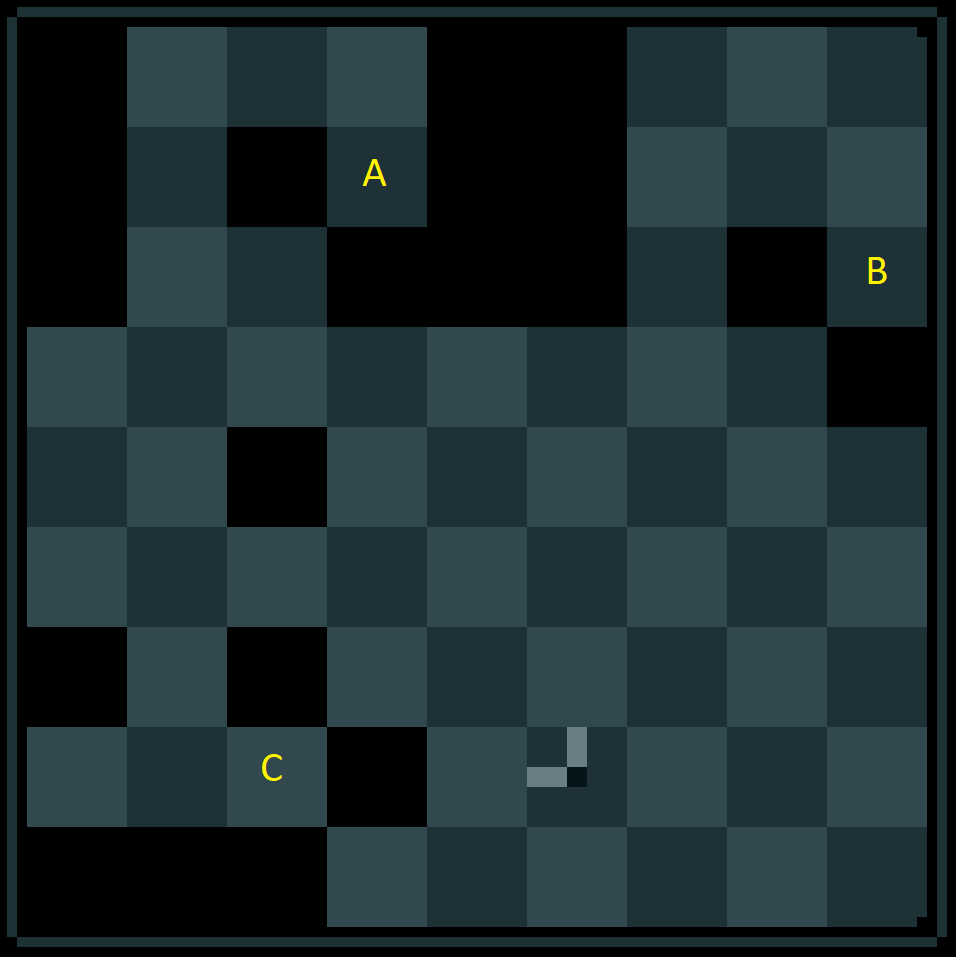
) A only
) C only
) A and C
) B and C
) None of them
9. Which of the following levels are solvable? (You can press Enter to skip levels.)
) 1 only
) None of them
) 1 and 2
) 1 and 3
) 1, 2, and 3
11. Which of the following cups contain a ball?
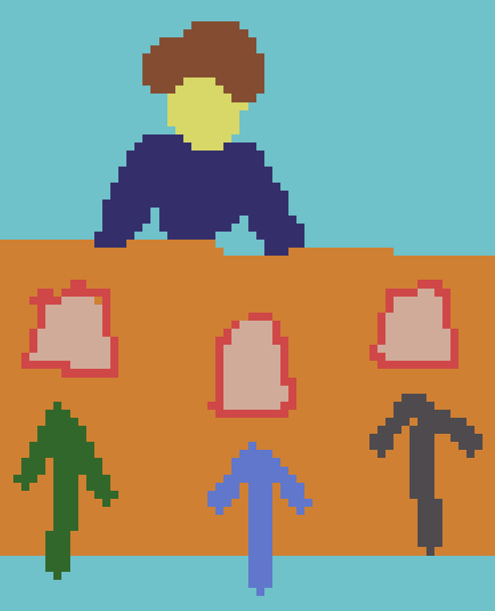
) Left cup only
) Middle cup only
) Right cup only
) Left and right cups
) All three cups
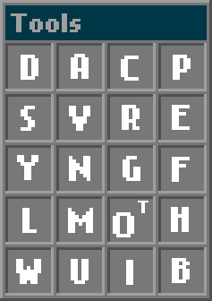 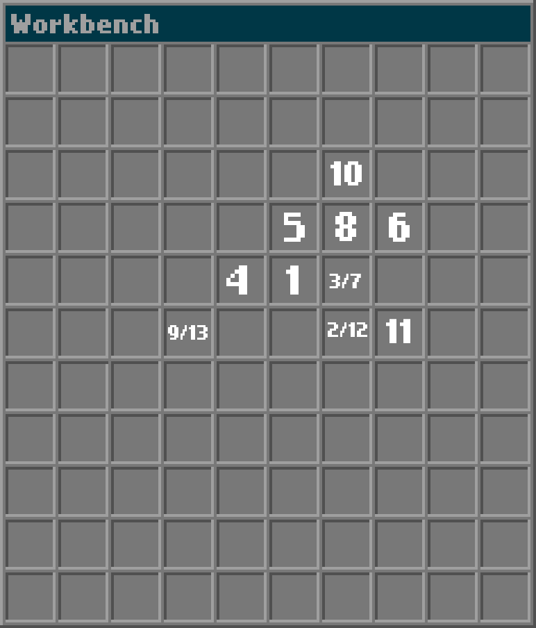